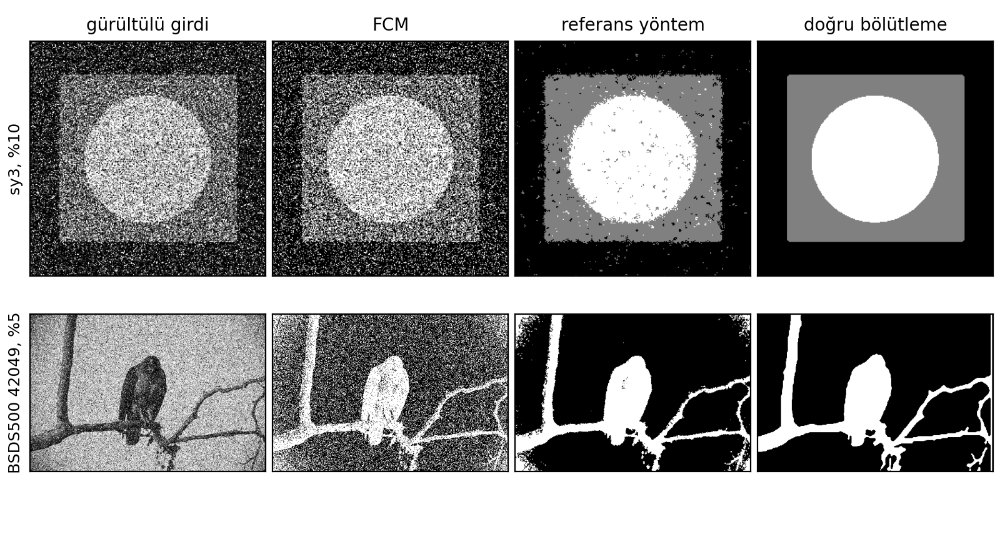

Bölütleme, bir görüntüyü birbirine ait bölgelere ayırır: bir MR görüntüsündeki doku türleri ya da bir uydu görüntüsündeki arazi sınıfları gibi. Çoğu zaman bir şey ölçülmeden ya da tanınmadan önceki ilk adımdır.
- Her piksel bir sınıf etiketi alır → bölgeler, sınırlar ve alanlar ölçülebilir
- Kullanım alanları: tıbbi görüntüleme, uzaktan algılama, endüstriyel denetim
- Gerçek görüntüler gürültülüdür: algılayıcı gürültüsü, hatalı pikseller (tuz-biber), ultrason ve radarda benek gürültüsü
- İyi bir yöntem, tek tek birçok piksel hatalı olsa bile bölgeleri bütün tutar

Bizim koşularımız, tohum 0: gürültülü görüntü, düz FCM, referans yöntem ve doğru bölütleme